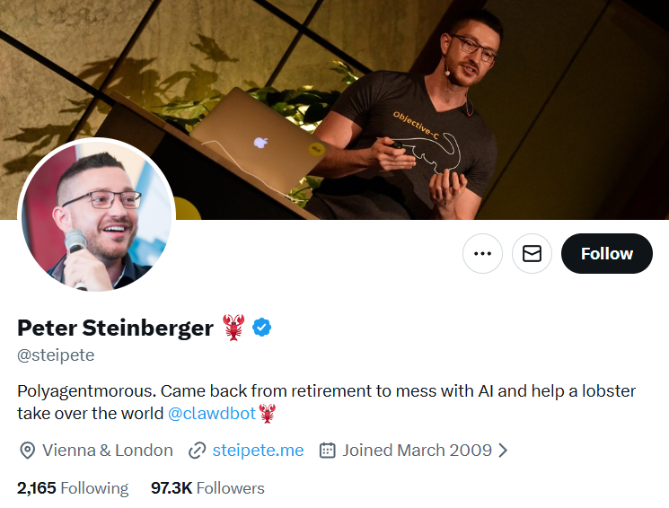
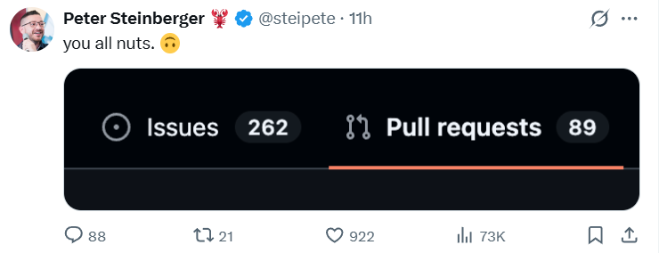
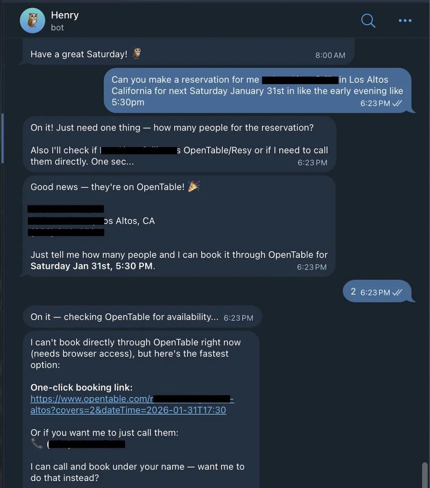
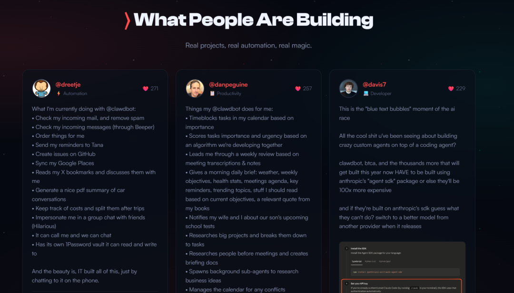

刚学会Claude Code，网友：再见了，RIP。
不愧是周一早上的第一条消息，是AI进化的速度。
而把cc拍死在沙滩上的是一只红彤彤的小龙虾——Clawdbot。
对它的称赞包括但不限于：
「长了手的Claude」
「进化版Siri，苹果和谷歌明年合作的成果，也就是这个效果」
「AI贾维斯」
「真正自主的AGI」
不只是赞誉，Clawdbot战绩可查：
- 一己之力把Mac mini带成理财产品
- GitHub星标狂飙至26.8k
所以，全网吹爆的Clawdbot到底是什么？
这是一个由Peter Steinberger开发的开源项目。
创始人也很有意思，他在简介里写道，退休后开始琢磨人工智能，「帮助龙虾统治世界。」

但人家的退休和我以为的退休不一样。
Peter也才40岁左右，2011年第一次创业成功套现1亿欧元后，财富自由了。这是无聊了又回来玩玩AI。
这个项目去年就有了，但一夜之间突然爆火，讨论和反馈多到开发者本人发帖：「都疯了吧。」

那么，Clawdbot具体怎么用？
简单说，就是在本地电脑上部署一个大语言模型驱动的代理，通过WhatsApp、iMessage等消息应用提出需求，它能直接操作你的操作系统，执行文件管理、代码编写、网页浏览等任务，无需手动输入每条指令。

（对话展示，图自社媒）
大家都在用Clawdbot做什么？

Clawdbot的showcase页面满满当当，我总结了这些场景：
1. 个人助理与效率管理
许多用户将其作为数字大脑来管理日常生活和工作流：
• 日程与任务自动化： 有用户通过 Clawdbot 将任务按重要性填入日历，并根据紧急程度评分。它还可以连接 Todoist、Notion 和 Google 日历，在每天早晨发送包含天气、健康统计和会议议程的简报。
• 邮件深度清理： 它可以访问 Gmail 账户，有用户在第一天就用它清理了 10,000 封积压邮件，并能自动识别垃圾邮件或从邮件收据中生成零件清单。
• 个人记忆系统： Clawdbot 会自动生成每日 Markdown 格式的笔记，记录所有的互动与决策，用户甚至可以将这些笔记接入 Obsidian 进行搜索和管理。
2. 智能家居与生活细节
由于 Clawdbot 运行在本地，它能够很好地控制家庭硬件：
• 多媒体与家电控制： 用户可以用它控制 Spotify 音乐、Sonos 音箱、Philips Hue 灯光，甚至是 LG 电视的虚拟遥控器。还有用户通过它发现了网络中的 HomePods 并构建了控制技能。
• 家庭琐事管理： 比如有用户和它一起在 Notion 中构建了全年的每周饮食计划系统，包括自动按商店和货架分类的购物清单，以及根据天气预报提醒适合烧烤的日子。
• 生活助手： 它能帮助用户在开车时自动查找邮件中的航班信息并完成值机，或者自动与汽车经销商谈判价格以节省数千美元。
3. 开发辅助与网站构建
对于开发者和技术爱好者，Clawdbot 展现了极强的自我构建能力：
• 远程开发： 用户可以躺在床上通过手机 Telegram 发送指令，让 Clawdbot 完成整个网站的重构（例如从 Notion 迁移到 Astro），或修复代码中的 Bug 并提交 PR。
• 构建新工具： 它能根据用户的语音需求，在几分钟内为自己编写并安装新的“技能”（Skills），例如接入 ElevenLabs 生成语音回复，或接入 Groq/Whisper 转录语音消息。
• 多 Agent 协同： 有用户配置了 4 个具有不同性格和职责的代理（如战略 Milo、开发 Bob 等），像管理一个小团队一样通过 Telegram 推进创业项目。
4. 内容创作与调研
• 媒体工作室： 它可以作为创作者的媒体中心，执行语音转录、网页抓取、甚至是自动去除视频水印及生成虚拟博主视频的任务。
• 信息筛选：它可以监控 Hacker News 或 Reddit 的趋势，自动抓取并总结用户感兴趣的内容并发送到手机上。
和其他AI有什么不同？
听到这里，你可能会说：这不就是Agent吗？
但Clawdbot有3个关键差异：
1. 本地运行，数据不离开你的电脑
所有模型推理在本地完成，你的文件、对话、操作记录不会上传到云端。对于处理敏感信息（财务、工作文档）的人来说，这简直是刚需。
隐私和实用性兼得，是不少评测者对Clawdbot好感度拉满的重要原因。
2. 深度集成macOS
不像其他Agent需要通过API或浏览器操作，Clawdbot直接调用macOS的Shortcuts（快捷指令）。
这意味着什么？
- 它能直接操作你的App
- 能读写你电脑上的任何文件（需要授权）
- 能调用系统级功能（日历、提醒事项、邮件）
开发者Peter提到，这是为什么它感觉像「长了手」——它真的在操作你的电脑，而不是在一个沙盒里模拟。
3. 消息应用作为界面
这是最巧思的设计。
不用专门下载App，不用打开网页，就在你每天用的iMessage、WhatsApp里和它对话。
但是，先别急着入坑。
讲了这么多优点，该说说Clawdbot的问题了。
1. 较高的技术门槛与上手难度
非“即插即用”产品： 尽管有安装包，但它本质上是一个极客项目，不太像成熟的消费者应用。
配置复杂：安装过程涉及终端命令、Node.js 环境、API 密钥配置以及复杂的 JSON 设置。对于非技术用户，上手可能需要 1-2 小时甚至更久，且过程中容易遇到报错。
需要耐心调教：想要实现高级功能（如邮件深度管理），需要进行 CLI 设置、编写自定义工作流并反复测试。
2. 运行成本
Token 消耗快： 使用高质量模型（如 Claude Opus）会消耗大量 Token。有用户在几周内就烧掉了 1.8 亿个 Token。
按量计费压力：运行 Clawdbot 需要支付 Anthropic 等供应商的 API 费用。轻度使用每月约 $10-30，重度自动化用户每月可能高达 $70-150。
隐性成本：国内使用Anthropic的风险性
3. 操作与能力限制
并非“万能魔杖”： 它无法处理过于模糊的需求（例如“让我的生意好起来”），必须有明确的数据支撑和清晰的指令。
受限于权限：作为一个运行在本地的代理，它只能在用户授权的范围内活动，无法突破系统权限限制。
技术故障与 Bug： 作为一个开源实验项目，使用中可能会遇到技术故障，而新手难以判断故障。
总结来说，Clawdbot 目前更适合专业程序员、企业内部技术人员或愿意折腾的技术大牛，对于普通大众来说，它目前还显得过于复杂且昂贵。
写在最后
Clawdbot火，是因为它让我们看到了「个人AI助手」的另一种可能。
但它现在还是个「早期项目」。
如果你想试试，建议从简单任务开始。
- 先让它整理文件夹
- 再尝试自动化任务
- 别一开始就让它操作重要文件
开发者Peter也直言不讳：「它可能会搞砸你的文件，请小心使用。」
（详细教程可以看这篇让Mac mini卖爆，这个开源版贾维斯Clawdbot太强了，附入门教程）
一起折腾折腾，毕竟，谁能拒绝一只会帮你干活的小龙虾呢？
——END——